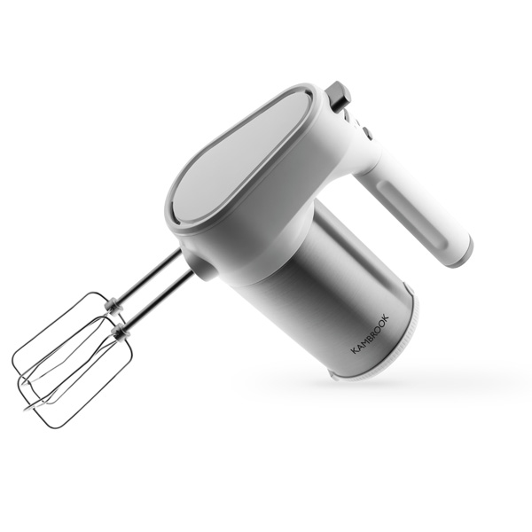
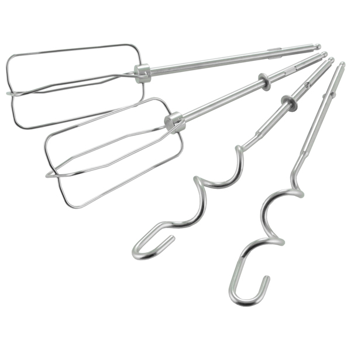
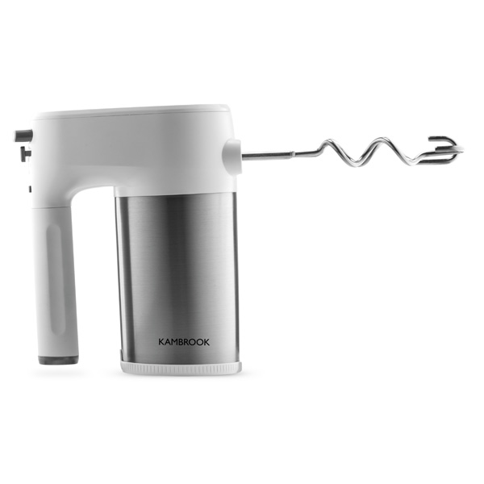

KAMBROOK Миксер AHM400
Технические характеристики
Напряжение: 220–240 В
Частота: 50/60 Гц
Мощность: 350 Вт
Длина шнура: 1 м
Вес: 1,1 кг
Габариты (В×Ш×Г):
18×13,5×8 см
Сделано в Китае
Специальные насадки и несколько скоростей
Миксер Kambrook AHM400 мощность 350 Вт с регулируемыми скоростями вращения и набором насадок используется на домашней кухне для взбивания и перемешивания различных продуктов.
С помощью насадок-венчиков на высоком скоростном режиме можно качественно взбить сливки и яичные белки в густую, нежную пену. На минимальных оборотах готовят жидкое тесто для блинов, оладушек или шарлоток. Средняя скорость вращения венчиков используется для тщательного смешивания ингредиентов соусов и майонезов. Замесить крутое дрожжевое тесто для хлеба или пирогов можно с помощью плавного вращения спиралевидных насадок на небольших рабочих оборотах.
1-я скорость
Обработку продуктов необходимо начинать при низкой скорости, чтобы избежать расплескивания. Через некоторое время переключите миксер на 2 и 3 скорость.
2-я скорость
Рекомендуется использовать для приготовления соусов, бисквитного теста.
3-я скорость
Подходит для взбивания сливок, яиц и яичных белков.
Эффективный режим турбо
Для быстрого взбивания ингредиентов удобно воспользоваться турбо-режимом и всего за несколько секунд получить продукт однородной, нежной консистенции. Такая функция позволяет существенно экономить время на приготовление, например, свежего фруктового смузи или молочного коктейля. Для более быстрого перемешивания продуктов или увеличения скорости нажмите кнопку режима Турбо. Не используйте режим Турбо более 1 минуты.
Комплектация
Миксер: 1 шт.
Насадка для взбивания: 2 шт.
Насадка для теста: 2 шт.
Руководство по эксплуатации: 1 шт.
Гарантийный талон: 1 шт.
Сейлз аргументы
- Кнопка снятия насадок
- Удобный переключатель скоростей
- Кнопка режима Турбо
- Венчики для взбивания
- Насадки для замешивания теста